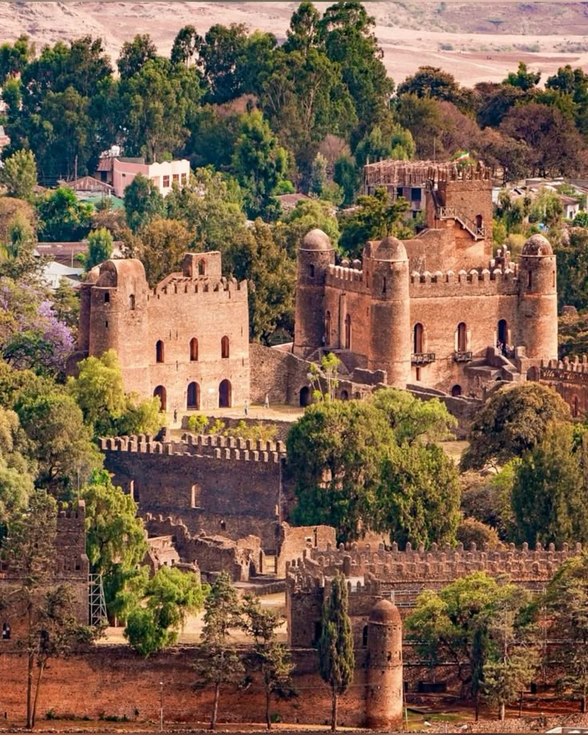
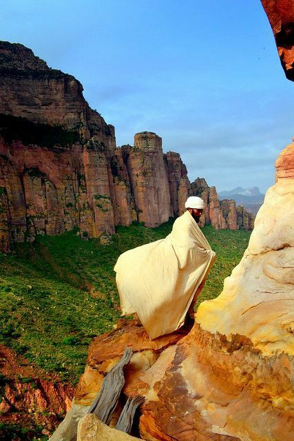

Tana Hike,BahirDar,Ethiopea
Tana Hike,BahirDar,Ethiopea
Gonder Fasile Ginb,Gonder,Ethiopea Adiss Abeba, Ethiopea
Adiss Abeba, Ethiopea
DebreDaamo,Tigrayi,Ethiopea Semin Mountain, Gonder,Ethiopea
Semin Mountain, Gonder,Ethiopea Lalibela,Welo,Ethiopea
Lalibela,Welo,Ethiopea Blue Nile Falls - Ethiopia
Blue Nile Falls - Ethiopia Axum,Tigrayi,Ethiopea
Axum,Tigrayi,Ethiopea Ethiopia , Lake langano
Ethiopia , Lake langano Ethiopia, Awash
Ethiopia, Awash.jpg) Ethiopia , Wenchi Lake
Ethiopia , Wenchi Lake Sof Omar Cave
Sof Omar Cave